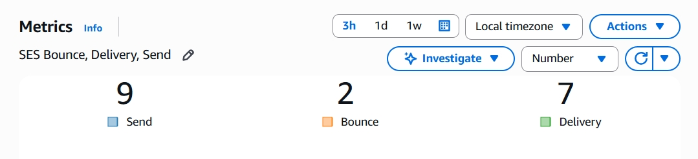
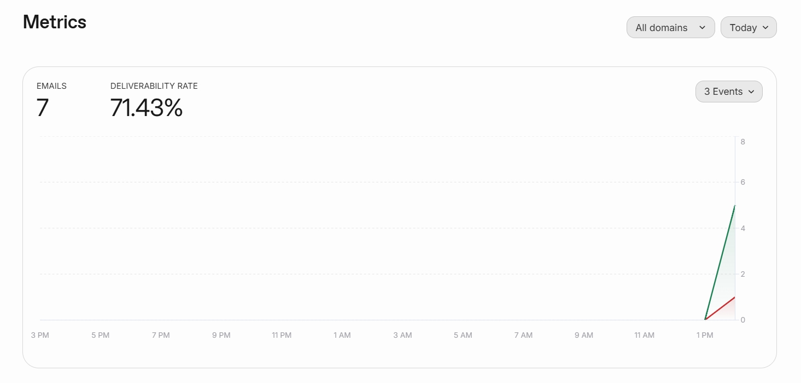

需求取捨 × 技術 PoC
登入通知自動化導入評估
本專案以「登入通知」為情境，記錄「是否導入自動化通知」的決策過程：針對「何時需要自動寄信」、「成功標準」及「不涉及哪些功能」方向進行確認，再實際測試 AWS SES 與 SaaS 郵件服務，對照維持現狀（不寄送登入通知）的風險後，給出一個分階段執行的建議。
需求收斂
User Story
MoSCoW
AWS SES
SaaS 評估
方案取捨
問題定義
- 問題：使用者登入帳號時，目前沒有登入通知機制；一旦帳號遭盜用或出現異常登入，使用者本人不會即時收到提醒，事後也缺乏可查證的寄送紀錄。
- 期望目標：制定一套自動發送登入通知流程，登入成功後就能自動寄出通知；如通知寄送失敗，要能被人發現；每月的寄信成本也要能被合理預估。
成功標準
- 時效性：從登入成功到信件送達收件匣，希望能控制在 1 分鐘內「即時」完成，才能讓使用者第一時間察覺異常登入。
- 可追蹤性：每封信件寄出成功或失敗都要留存紀錄，以便查證。
- 成本可預估性：以月量約 3,000 封通知信件為示意情境，確認費用落在可控範圍，避免導入後成本超出預期。
- 失敗可見性：v1 寄信失敗不要求即時告警，但需有方法讓人事後察覺失敗，而不是完全不知道是否寄信成功。
範圍與取捨
這裡的範圍以 v1 為目標：先驗證「登入通知是否能自動化」，如驗證可行，再決定後續是否擴充。
1. 需求對照
| 角色 | 需求目標 | 驗收標準 |
|---|---|---|
| 產品負責人 |
|
|
| 收件人 |
|
|
| 技術評估者 |
|
|
| 決策主管 | 取得不同發送登入通知方案在成本與風險上的可比對資訊 | 能據此做出是否導入自動發送登入通知流程的決策 |
2. MoSCoW 優先序
| 優先序 | 項目 |
|---|---|
| 必備 |
|
| 應備 |
|
| 可選 |
|
| 暫不 |
|
暫不做原因
- 「這不是我」後續處置：一鍵鎖帳及強制重設密碼屬於帳號安全流程，需另接身分驗證與權限系統；本階段先確認登入通知能自動寄出並可追查。
- 多管道同步：簡訊、LINE 需另接通道與維運，工程成本較高；本階段先確認郵件登入通知可行，再評估是否擴充。
- 多語系與開信追蹤：v1 核心是「自動寄出、可查證是否寄信成功」，不是語系覆蓋或開信成效分析；可等核心路徑穩定後再補。
- 其他帳號信件：密碼重設、註冊驗證等雖同屬帳號通知，但觸發條件與範本不同；本階段僅先驗證「登入通知」這一條路徑。
技術 PoC
1. 候選方案
- AWS SES（Simple Email Service）：採雲端基礎設施型郵件 API。優點為用量超過免費方案額度後單位成本較可控；相對地，網域驗證與寄送監控需自行建置與維運。
- SaaS 郵件服務（本次以 Resend 免費方案實測，亦可替換為同級服務）：採託管型郵件 API。優點為能快速導入、寄送狀態可於後台直接查詢，適合作為概念驗證與快速驗證；相對地，用量超過免費方案額度後單位成本通常高於基礎設施方案，且受供應商額度與條款約束。
- 維持現狀（不寄送登入通知）：量化目前完全沒有登入通知時的資安風險與稽核缺口，作為基準方案。
2. 實測紀錄
對三個候選方案分別進行寄送功能、時效性、可追蹤性、失敗可見性及成本驗證，結果如下。
| 方案 | 驗證項目 | 結果 |
|---|---|---|
| AWS SES | 環境就緒（Sandbox） | 需先驗證寄件與收件信箱，才能測試寄信功能。 |
| 寄送 5 封信件 | 5 封信件皆成功送達，延遲時間約 1 至 3 秒，但落入垃圾郵件資料夾。本測試僅完成信箱驗證、尚未建置完整發送網域認證，故此階段僅能確認「寄得出」，信件送達收件匣有待取得正式網域後再驗證。 | |
| 導入條件 | 已確認存在轉正式申請入口，但轉為正式寄送前，需先完成「發送網域」驗證。本階段無自有網域，故在測試環境完成寄送與失敗可見性驗證。 | |
| 可追蹤性及失敗可見性 | 寄送結果可於監控台查詢，但入口較不明顯，指標與次數需自行挑選、設定後才能對應寄出／送達／退信結果。 | |
| 成本（月約 3,000 封） | 每 1,000 封約 0.16 美金；月量 3,000 封試算約 0.48 美金。定價參考：aws.amazon.com/ses/pricing | |
| SaaS（Resend） | 申請免費方案 | 註冊與啟用快速完成，可立即進入寄送測試。 |
| 寄送 5 封 | 5 封信件皆成功送達，延遲時間約 1 至 3 秒，皆落入收件匣中。 | |
| 導入條件（轉正式） | 無需另行申請正式權限即可開始驗證；正式環境建議完成發送網域驗證以提升到達率，用量超出免費額度後再升級付費方案。 | |
| 可追蹤性及失敗可見性 | 寄送結果可至監控台查看，入口明顯。一進入監控台即可直接看到成功或退信狀態，不必自行組指標。 | |
| 成本（月約 3,000 封） | 月量 3,000 封以內免費，超量後進付費方案（付費方案 20 美金起）。定價參考：resend.com/pricing | |
| 維持現狀 | 風險與稽核缺口 | 無寄送成本，但帳號遭盜用或異常登入時，使用者無法第一時間察覺，事後也沒有任何寄送紀錄可供稽核；資安風險雖難以精確換算金額，但成本明確存在。 |


3. 方案對照表
將以上實測結果整理成方案對照表。
| 評分維度 | AWS SES | SaaS 免費方案 | 維持現狀 | 評分依據 |
|---|---|---|---|---|
| 上手時間 | 中低 | 低 | — | 依實測所需時間 |
| 寄送成功率 | 100%（5/5） | 100%（5/5） | 不適用 | 小樣本實測 |
| 失敗可見性 | 監控台指標需自建 | 監控台直覺 | 不適用 | 失敗情境操作 |
| 低量成本 | 0.48 美金 | 免費 | 無金錢成本，風險高 | 定價＋估算 |
| 可維運性 | 高 | 高 | 不適用 | 綜合經驗 |
| 與自動化相容 | API | 現成整合／API | 無法 | 官方文件 |
| 初評 | 優點：單位成本可控，API 可接自動化 限制：網域／監控門檻較高 建議：用量成長後再考慮導入，不適合作驗證期首選 |
優點：上手快、狀態好查、低用量免費，API／自動化友善 限制：用量超過每月 3,000 封後成本較 AWS SES 高 建議：驗證期首選 |
優點：零導入成本，無需任何開發 限制：使用者無法察覺異常登入，也無寄送紀錄可稽核，資安風險明確存在 建議：僅適合作為導入前的過渡空窗，應盡快改用其他方案補上此缺口 |
綜合上手時間、失敗可見性、成本與自動化相容之實測結果 |
決策建議
驗證期：優先採用 SaaS 免費方案，上手快、失敗可見性好，能快速驗證自動化是否真的解決問題。
用量成長期：評估轉 AWS SES，並提前規劃網域驗證與監控。
維持現狀（不寄送登入通知）：僅適合作為導入前的短暫過渡，應盡快完成任一方案的正式導入，避免帳號異常缺乏通知機制的資安風險。
潛在風險
- 網域驗證可能比預期久：網域的設定與生效時間不一定順利，正式排程前最好預留緩衝。
- 到達率需要時間驗證：信件是否被歸類為垃圾信，得觀察一段真實表現才能判斷，5 封測試信的 100% 送達率還不足以下定論。
- 個資與合規要另外留意：登入通知內容包含登入時間、裝置、地點資訊等個人資料，相關合規條款需要再確認一次。
下一步建議
- 失敗告警串接 Discord／Slack：建立一條自動化工作流程，將寄信失敗通知發送到通訊軟體，讓負責人即時看見問題。
- 寫一頁發送 SOP：明定負責人、檢查時間與頻率、突發狀況處理流程等 SOP，確保上線後能明確執行。
- 準備好轉正式的路徑：一旦超過預估月量，即切換成合適方案並啟動正式流程、監控串接。